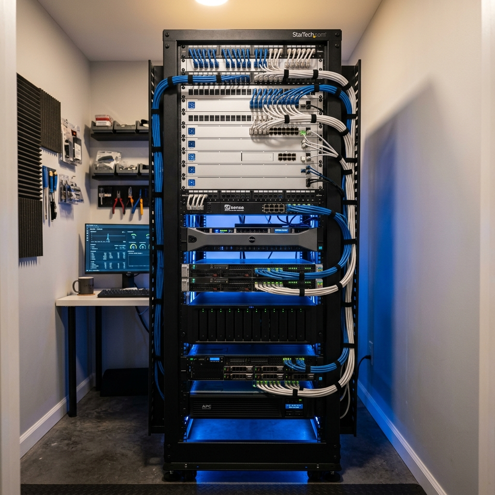

Setting Up Your First Home Lab: A Comprehensive Guide
Take your networking and sysadmin skills to the next level with a dedicated local playground.

A home lab is more than just a hobby—it's a career-boosting environment where you can experiment with enterprise-grade tech without fear of breaking anything critical. Whether you want to host your own services or learn virtualization, this guide will get you started.
1. Define Your Goals
Are you looking to learn networking (Cisco, Ubiquiti), virtualization (Proxmox, ESXi), or home automation (Home Assistant)? Your goal will dictate the hardware you need. A media server like Plex requires more storage, while a virtualization host needs more RAM and CPU cores.
2. Choosing Your Hardware
You don't need a full server rack to start. A small form factor PC like an Intel NUC or a repurposed enterprise desktop (like a Dell OptiPlex) is perfect for a starter lab. They are quiet, power-efficient, and surprisingly capable.
3. Virtualization is Key
Running separate hardware for every service is inefficient. Using a hypervisor like Proxmox VE or VMware ESXi allows you to run dozens of virtual machines and containers on a single physical machine. This makes it easy to snaphost, backup, and restore your experiments.